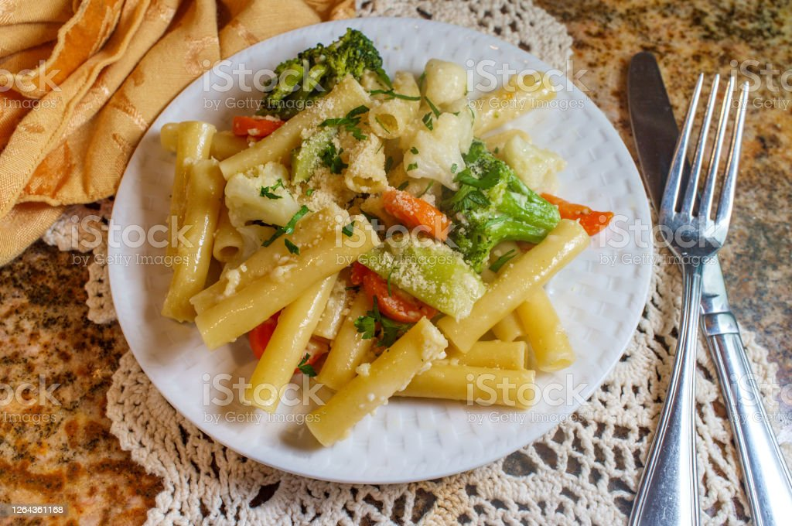

Creamy Garlic Parmesan Pasta

Description
Indulge in the velvety richness of Creamy Garlic Parmesan Pasta. This dish combines perfectly cooked fettuccine with a luscious sauce made from butter, garlic, heavy cream, and grated Parmesan cheese.
Ingredients
- 8 ounces fettuccine pasta
- 2 tablespoons butter
- 3 cloves garlic, minced
- 1 cup heavy cream
- 1 cup grated Parmesan cheese
- Salt and pepper to taste
- Chopped fresh parsley for garnish
Instructions
- Cook the fettuccine pasta according to the package instructions. Drain and set aside.
- In a large skillet, melt the butter over medium heat. Add the minced garlic and sauté for about 1 minute until fragrant.
- Pour in the heavy cream and bring to a gentle simmer. Let it cook for 2-3 minutes to thicken slightly.
- Gradually whisk in the grated Parmesan cheese until the sauce is smooth and creamy. Season with salt and pepper to taste.
- Add the cooked fettuccine to the sauce, tossing to coat the pasta evenly.
- Serve the creamy garlic Parmesan pasta in bowls, garnished with chopped fresh parsley. Enjoy with a side salad or garlic bread.